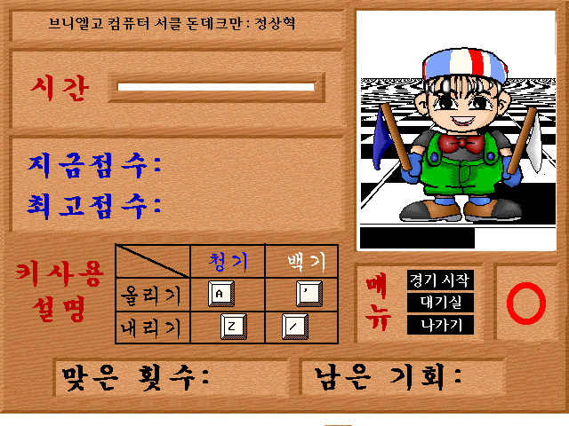
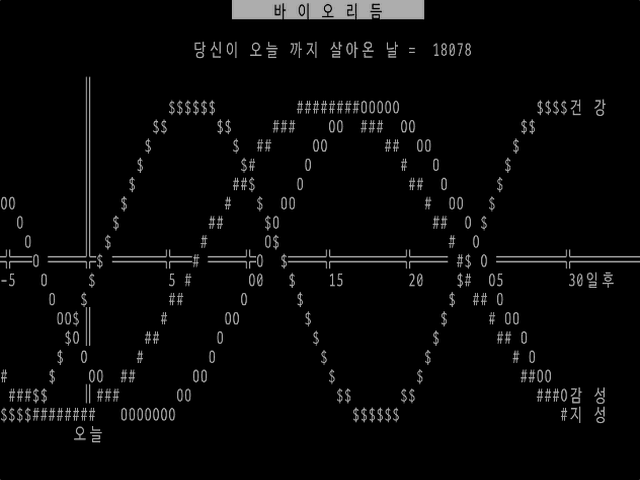
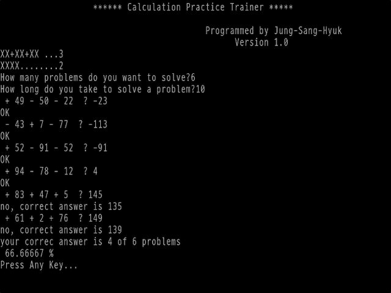
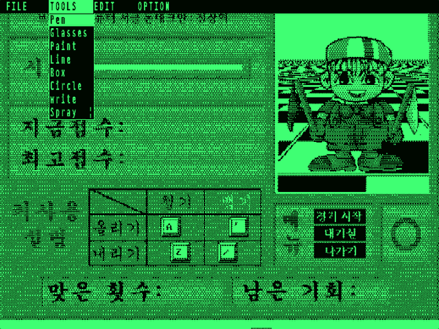

Quick Basic 프로그램 보관소
브니엘고 컴퓨터 서클 돈데크만 시절(1992~1996년) QuickBasic으로 만든 DOS 프로그램을 브라우저에서 다시 실행합니다. 기록은 이 브라우저의 Local Storage에 저장됩니다.

🚩 청기백기
음성 명령을 듣고 청기와 백기를 올리고 내리세요. "올리지 마!"에 속으면 안 됩니다. 4번 틀리면 끝.

🌹 퍼즐 그림 맞추기
3×3 슬라이딩 퍼즐. 흩어진 장미 그림 조각을 화살표 키로 밀어 원래 그림을 완성하세요.

📈 바이오리듬
생년월일을 넣으면 건강 23일, 감성 28일, 지성 33일 주기를 텍스트 화면에 $ O # 곡선으로 그립니다. 여러 달치 인쇄 용지도 만듭니다.

🧮 계산 연습
암산 연습 세 가지. 항 개수와 자릿수를 정하는 CP, 덧셈·뺄셈 20문제 RANDOM, 곱셈 20문제 MULTI.

🖌️ 그림판
허큘리스 720×348 흑백 그림판. 원작은 메뉴만 있던 미완성이라 메뉴 이름에 맞춰 기능을 채웠습니다. 원작 .pic 형식도 읽고 씁니다.